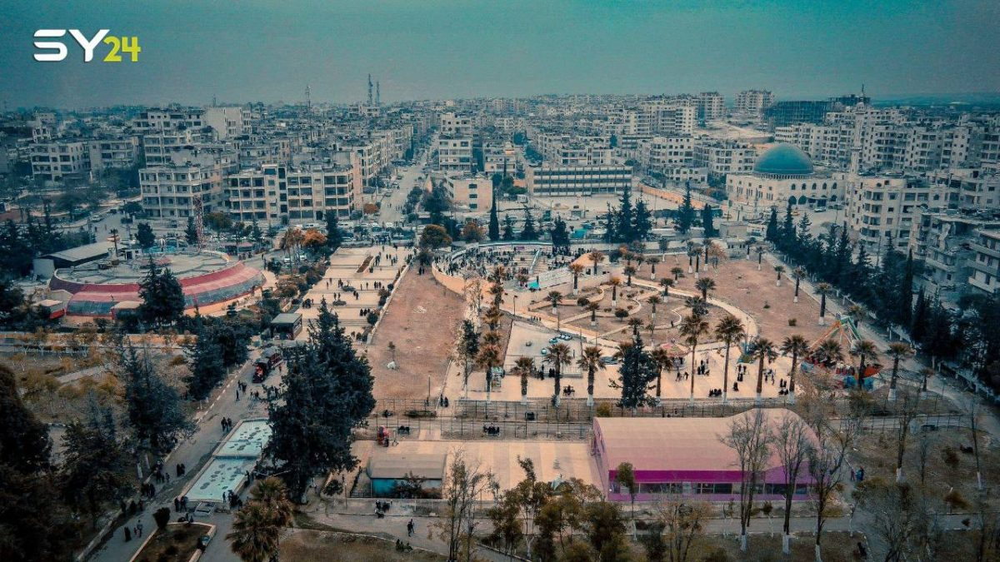

محافظة ادلب
: تفاصيل عن ادلب
محافظة إدلب هي إحدى محافظات سوريا، وتقع في الشمال بين خطي طول 36.10 غرباً و37.15 شرقاً،
وخطي عرض 35.10 جنوباً و36.15 شمالاً حيث تقع على البوابة الشمالية لسوريا التي تطل منها على تركيا وأوروبا،
وتعتبر من المحافظات الحديثة المحدثة في أيام الجمهورية العربية المتحدة.
